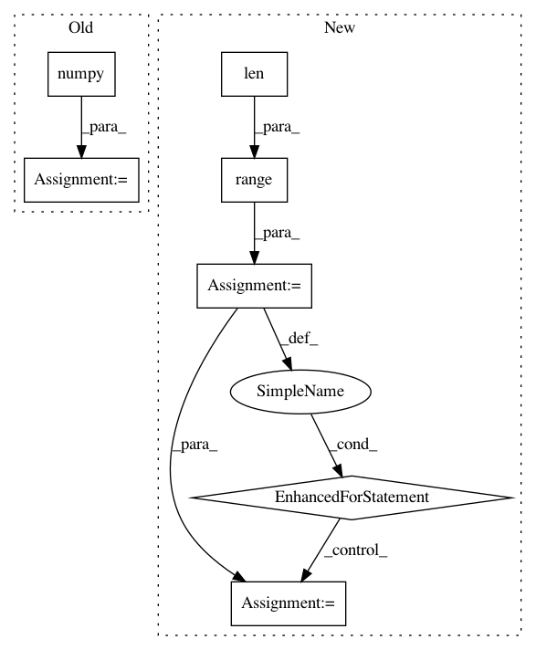

a922855fe7aef360e4a360caa800388d9c843355,art/classifiers/tensorflow.py,TensorflowV2Classifier,predict,#TensorflowV2Classifier#Any#Any#,673
Before Change
// // Run prediction
// results[begin:end] = self._sess.run(self._output, feed_dict=feed_dict)
results = self._model(x_preprocessed).numpy()
// print(type(results))
// sadf
return results
After Change
// Run prediction with batch processing
results = np.zeros((x_preprocessed.shape[0], self.nb_classes), dtype=np.float32)
num_batch = int(np.ceil(len(x_preprocessed) / float(batch_size)))
for m in range(num_batch):
// Batch indexes
begin, end = m * batch_size, min((m + 1) * batch_size, x_preprocessed.shape[0])
// Run prediction
results[begin:end] = self._model(x_preprocessed[begin:end]).numpy()
return results
def fit(self, x, y, batch_size=128, nb_epochs=10, **kwargs):
In pattern: SUPERPATTERN
Frequency: 3
Non-data size: 7
Instances
Project Name: IBM/adversarial-robustness-toolbox
Commit Name: a922855fe7aef360e4a360caa800388d9c843355
Time: 2019-07-23
Author: beat.buesser@ie.ibm.com
File Name: art/classifiers/tensorflow.py
Class Name: TensorflowV2Classifier
Method Name: predict
Project Name: kevinzakka/recurrent-visual-attention
Commit Name: 520e8fb57b890a7249334d9e90c9ad209d0b849f
Time: 2018-02-10
Author: kevinarmandzakka@gmail.com
File Name: modules.py
Class Name: retina
Method Name: foveate
Project Name: geomstats/geomstats
Commit Name: be291b6a6ab8a663beac72fefa213bc7216a1617
Time: 2020-04-07
Author: hadizaatiti@gmail.com
File Name: geomstats/learning/frechet_mean.py
Class Name:
Method Name: _ball_gradient_descent